37. Exercice d’application : version 17
Cette nouvelle version amène les évolutions suivantes :
- elle va être portée sur un serveur Apache / Windows ;
- pour réaliser ce portage, la version 17 contient toutes les dépendances dont elle a besoin dans son dossier [impots / http-servers/ 12]. On rappelle que les versions précédentes allaient chercher leurs dépendances dans différents dossiers de l’ensemble du projet [python-flask-2020] ;
37.1. Relocalisation des dépendances de l’application
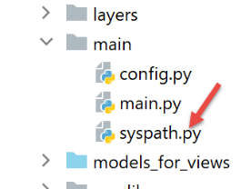
On rappelle que la gestion des dépendances de l’application est faite dans le script [syspath]. Dans la version précédente, ce script était le suivant :
Il faut relocaliser toutes les dépendances dont le nom absolu dépend de la variable [root_dir] de la ligne 8, ç-à-d les lignes 13-26.
Le script [syspath] de la nouvelle version sera le suivant :
- lignes 8-27 : toutes les dépendances sont désormais relatives à la variable [script_dir] de la ligne 5 ;
- lignes 42-45 : la variable [root_dir] a disparu de la configuration du syspath ;
- ligne 10 : les entités de l’application sont dans le dossier [entities] [1] ;
- ligne 12 : la couche [dao] est dans le dossier [layers/dao] [2] ;
- ligne 14 : la couche [métier] est dans le dossier [layers/métier] [2] ;
- ligne 16 : les utilitaires [Logger, SendMail] sont dans le dossier [utilities] [3] ;
- lignes 29-40 : on calcule le Python Path de l’application sans importer le module [myutils] ;
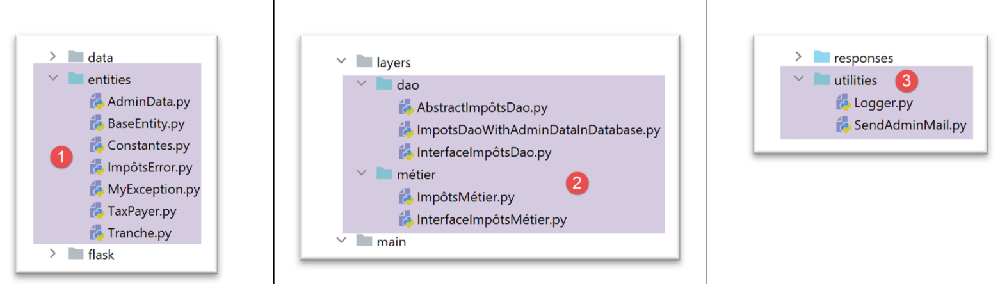
37.2. Tests
A ce stade, la version 17 doit fonctionner. Vérifiez-le.
37.3. Portage d’une application Python / Flask sur un serveur Apache / Windows
37.3.1. Sources
Pour réaliser le portage d’une application Flask sur Apache / Windows, j’ai dû chercher sur Internet. Voici le lien qui m’a aidé à démarrer : [https://medium.com/@madumalt/flask-app-deployment-in-windows-apache-server-mod-wsgi-82e1cfeeb2ed] ;
J’ai utilisé les informations de ce lien sauf pour la configuration du serveur Apache. Pour celle-ci j’ai utilisé un exemple de configuration du serveur Apache de Laragon.
37.3.2. Installation du module Python mod_wsgi
L’application Python / Flask que nous avons développée utilisait le serveur WSGI (Web Server Gateway Interface) [werkzeug] délivré avec Flask. Ce serveur est décrit |ici|. Le lien [https://www.fullstackpython.com/wsgi-servers.html] décrit le fonctionnement des serveurs WSGI. Il existe différents |serveurs WSGI|. L’un de ceux-ci est le serveur Apache fonctionnant en mode WSGI. C’est la solution adoptée ici parce que Laragon, que nous avons installé, vient avec un serveur Apache.
Pour que le serveur Apache puisse héberger une application Python, il nous faut installer le module Python [mod_wsgi]. L’installation de ce module est délicate parce qu’au cours de cette installation une compilation C++ a lieu. Pour réussir l’installation, il faut un compilateur Microsoft C++. Une solution simple est d’installer la version courante de Visual Studio Community [https://visualstudio.microsoft.com/fr/vs/community/].
Si on n’a pas l’utilité de Visual Studio autrement que pour [mod_wsgi], on peut limiter l’installation à l’environnement C++ :
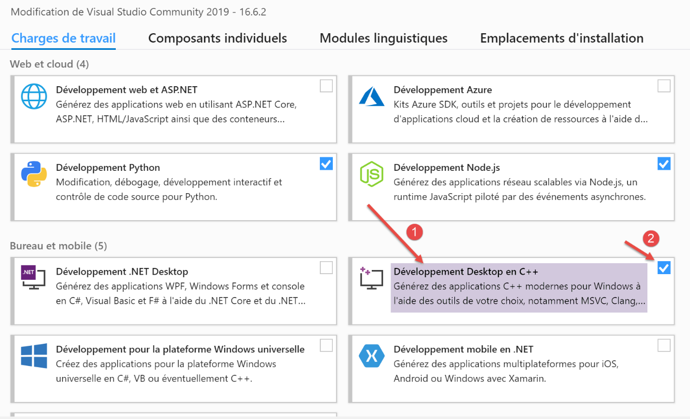
Une fois le compilateur C++ installé, l’installation du module [mod_wsgi] se fait dans un terminal PyCharm :
- ligne 1 : on fixe la valeur de la variable d’environnement [MOD_WSGI_APACHE_ROOTDIR]. Cette valeur est l’emplacement du serveur Apache dans le système de fichiers. Ici cet emplacement est [<laragon>\bin\apache\httpd-2.4.35-win64-VC15] où <laragon> est le dossier d’installation de Laragon. Vous pouvez obtenir cet emplacement de diverses façons. En voici une obtenue à partir d’une des options de Laragon :
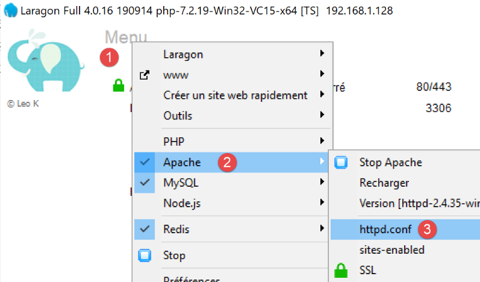
En [1-3], le fichier [httpd.conf] est le fichier de configuration principal du serveur Apache. Le fichier en question est alors ouvert dans un éditeur de texte (Notepad ++ ci-dessous) :
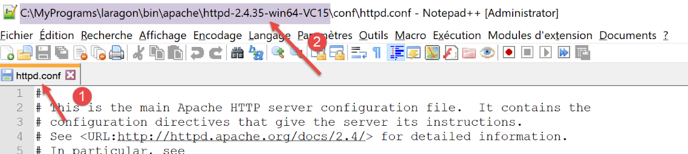
En [2], le dossier d’installation d’Apache est ce qui précède la chaîne [conf\httpd.conf].
Revenons à l’installation du module [mod_wsgi] :
- lignes 3-9 : installation du module [mod_wsgi] ;
37.3.3. Configuration du serveur Apache de Laragon
Nous allons configurer le serveur Apache de Laragon. Nous commençons par son fichier de configuration principal [httpd.conf] :
Nous nous plaçons à la fin du fichier [httpd.conf] :
- la ligne 8 a été ajoutée à l’existant du fichier [httpd.conf] en fin de fichier. Elle indique au serveur Apache où se trouve un élément du module [mod_wsgi] que nous venons d’installer ; Une façon simple d’avoir le chemin de la ligne 8 est d’exécuter la commande suivante dans un terminal PyCharm :
Certaines documentations disent qu’il faut ajouter les lignes 2 et 3 à la fin du fichier [httpd.conf]. Dans mon cas, la ligne 3 ci-dessus provoquait une erreur (module [encodings] manquant). Aussi n’a-t-elle pas été mise dans le fichier [httpd.conf]. Seule la ligne 2 y a été mise. La signification des différents paramètres du module [mod_wsgi] utilisables dans les fichiers de configuration d’Apache sont décrits |ici|.
Ensuite, nous allons activer le protocole HTTPS du serveur Apache :
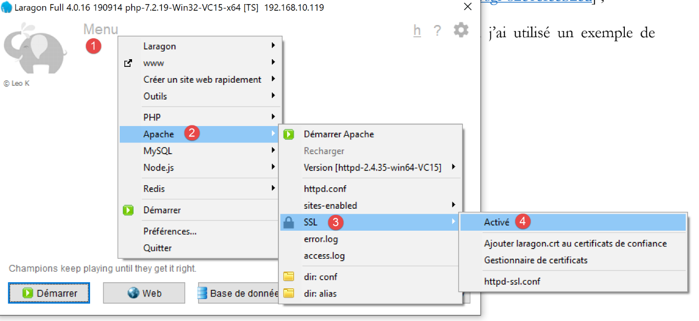
- en [1-4], on active le protocole HTTPS du serveur Apache ; Désormais, nous pourrons utiliser des URL [https://serveur/chemin] ;
Pour configurer Apache de façon à servir une application Flask, le lien référencé |plus haut|utilise des serveurs virtuels. Laragon propose également de gérer des serveurs virtuels :
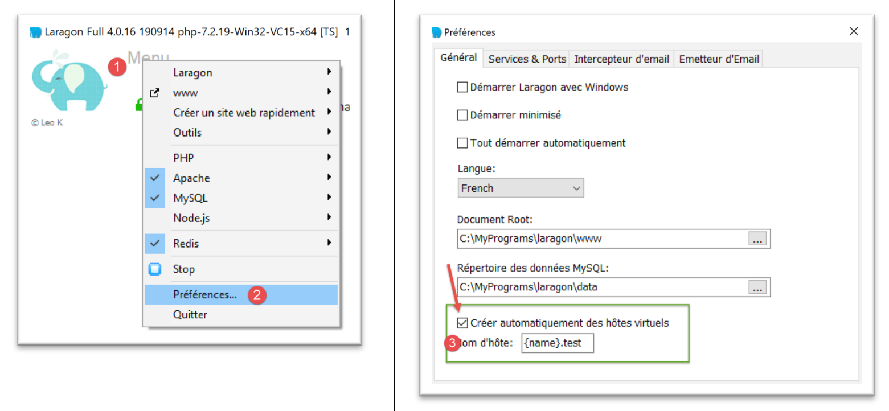
- en [1-3], on demande à Laragon de créer automatiquement des hôtes virtuels ; L’étape suivante est de créer un projet web avec Laragon :
| 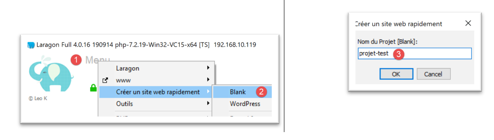 |
| 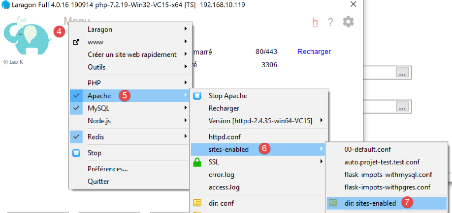 | 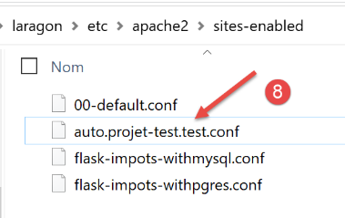 |
- en [1-3], on crée un projet PHP vide ;
- en [4-8], Laragon a créé un site virtuel appelé [auto.projet-test.test] configuré par le fichier [auto.projet-test.test.conf] [8] du dossier [sites-enabled] [7]. Ce dossier se trouve à l’adresse [<laragon>\etc\apache2\sites-enabled] où [laragon] est le dossier d’installation de Laragon ; Bien que ça n’entre pas dans ce qui est fait en ce moment, vous pouvez avoir la curiosité d’aller voir ce qu’est ce site web [projet-test] que nous venons de créer :
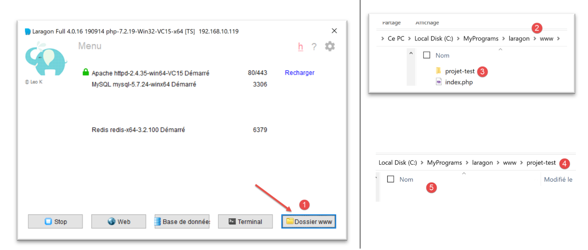
- en [1-5], un projet vide a été créé. C’est un projet PHP situé dans le dossier [<laragon>/www] où [laragon] est le dossier d’installation de Laragon ; Maintenant examinons le fichier [auto.projet-test.test.conf] généré par Laragon dans le dossier [<laragon>\etc\apache2\sites-enabled] :
- ligne 1 : la racine, dans le système de fichiers, du projet créé ;
- ligne 2 : le nom du serveur virtuel. Les URL pour ce serveur seront de la forme [http(s)://projet-test.test/chemin] ;
- lignes 4-12 : configuration du site virtuel pour le port 80 (ligne 4) et le protocole HTTP ;
- lignes 14-27 : configuration du site virtuel pour le port 443 (ligne 14) et le protocole HTTPS ; Voyons comment fonctionne un serveur virtuel. Lançons tout d’abord le serveur Apache et PHP :
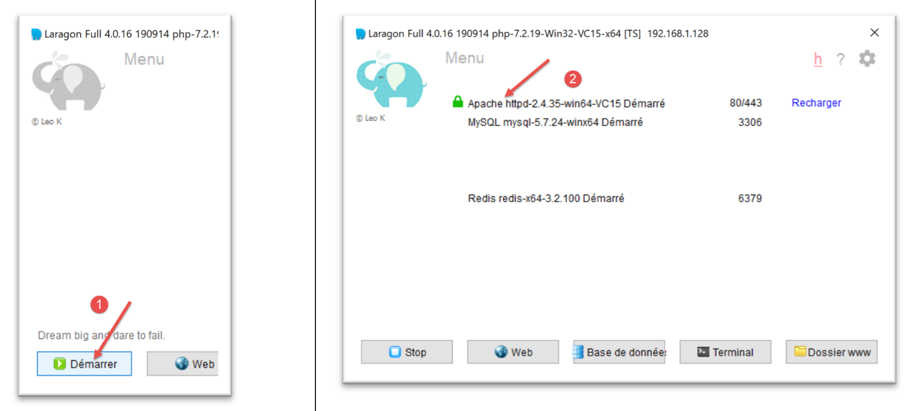
Avec un navigateur nous demandons ensuite l’URL [http://projet-test.test/] :
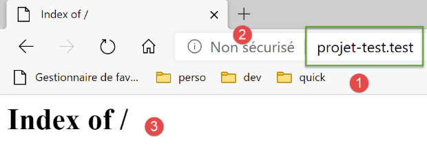
- en [1], l’URL demandée ;
- en [2], le protocole HTTP a été utilisé ;
- en [3], parce que le projet [projet-test] est vide, on obtient l’index de son dossier (liste de son contenu), index vide ; Maintenant demandons l’URL sécurisée [https://projet-test.test/] :
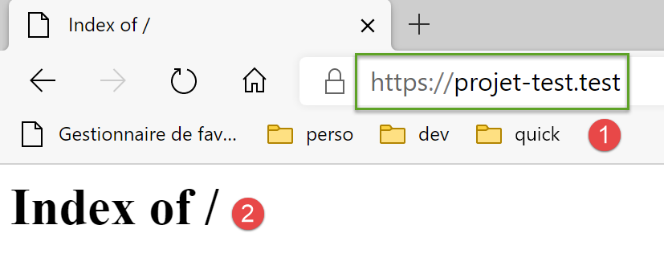
- en [1-2], on obtient la même réponse que précédemment mais avec le protocole HTTPS [1] ; La création du serveur virtuel [projet-test.test] a créé une nouvelle entrée dans le fichier [<windows>/system32/drivers/etc/hosts] :
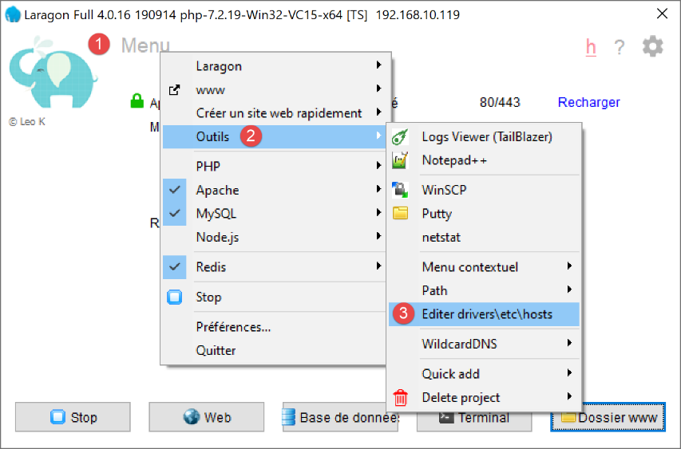
- ligne 23 : l’adresse IP du nom [projet-test.test] est 127.0.0.1, ç-à-d l’adresse de [localhost] (ligne 20), la machine locale. Ainsi lorsque dans un navigateur on tape l’URL [http://projet-test.test/chemin], la requête est envoyée à l’adresse 127.0.0.1 sur le port 80. C’est alors le serveur Apache de la machine locale (localhost) qui répond. On peut se demander pourquoi lorsqu’on tape la requête [http://projet-test.test/], le serveur Apache utilise la configuration du fichier [<laragon>\etc\apache2\sites-enabled\auto.projet-test.test.conf] :
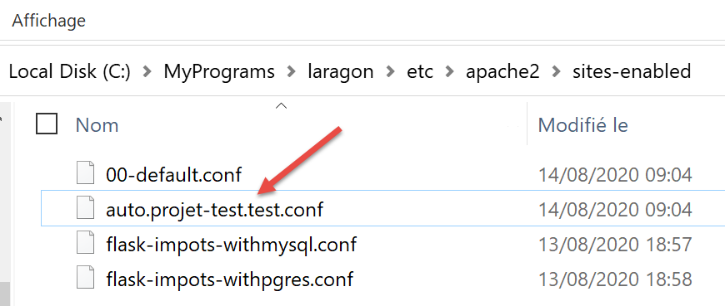
Pour le comprendre, il faut voir ce qu’envoie le navigateur au serveur Apache lorsqu’on fait cette requête. Faisons-la avec Postman :
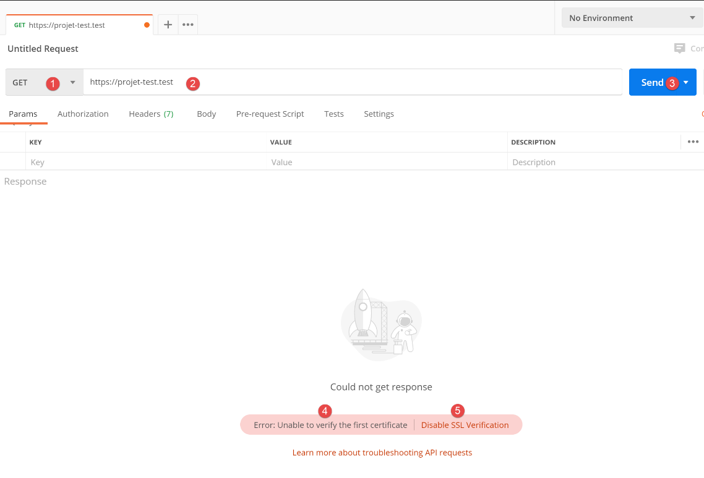
- en [1-3], on envoie une requête HTTPS [1] ;
- en [4], Postman indique qu’il n’a pas reconnu le certificat de sécurité. Le protocole HTTPS établit une liaison cryptée entre le client web (ici Postman) et le serveur Apache. Cette liaison cryptée se fait au moyen de certificats échangés entre le client et le serveur. C’est le serveur qui initie le dialogue d’établissement de la liaison cryptée en envoyant au client un certificat de sécurité. Pour que ce certificat soit accepté par le client il faut qu’il soit signé, en clair acheté à des entreprises habilitées à délivrer des certificats de sécurité. Lorsque nous avons activé le procole HTTPS de Laragon, Laragon a créé lui-même le certificat de sécurité. On dit alors du certificat qu’il est auto-signé. La plupart des clients web émettent un avertissement lorsqu’ils reçoivent un certificat auto-signé. C’est ce que fait Postman en [4]. La plupart des clients web proposent alors de désactiver la vérification du certificat de sécurité envoyé par le serveur. C’est ce que propose Postman en [5] ; Nous cliquons sur le lien [5] pour désactiver la vérification SSL (Secure Sockets Layer). SSL / TSL (Transport Layer Security) est un protocole de sécurité qui crée un canal de communication sécurisé entre deux machines de l’internet. C’est le protocole utilisé ici par Apache. La réponse est la suivante :
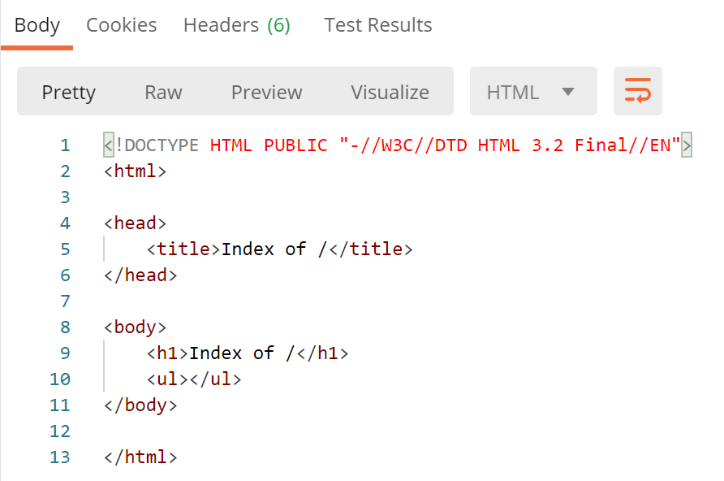
Nous recevons la même page qu’avec un navigateur traditionnel. Maintenant voyons le dialogue client / serveur dans la console Postman (Ctrl-Alt-C) :
- ligne 6 : l’entête HTTP [Host] précise le nom du serveur ciblé par le client web. C’est le principe des serveurs virtuels. A une même adresse IP (ici 127.0.0.1), un serveur web peut héberger plusieurs sites web avec des noms différents. L’entête HTTP [Host] permet au client de dire à quel serveur (ici de l’adresse 127.0.0.1) il s’adresse ; Maintenant que fait Apache ?
Lorsqu’il démarre, Apache lit tous les fichiers de configuration trouvés dans le dossier [[<laragon>\etc\apache2\sites-enabled] :
Chaque fichier de configuration définit un serveur virtuel. Par exemple dans le fichier [auto.projet-test.test.conf], on trouve la ligne suivante :
La ligne 2 définit le serveur virtuel [projet-test.test]. Le fichier [auto.projet-test.test.conf] est la configuration de ce serveur virtuel. Parce qu’il lit au démarrage tous les fichiers de configuration du dossier [<laragon>\etc\apache2\sites-enabled], le serveur Apache sait qu’il existe un serveur virtuel appelé [projet-test.test]. Ainsi lorsqu’il reçoit du client Postman, la requête HTTPS :
il reconnaît que la requête est adressée au serveur virtuel [projet-test.test] (ligne 6) et que celui-ci existe. Il utilise alors la configuration du serveur virtuel [projet-test.test] pour répondre au client Postman.
37.4. Création d’un premier serveur virtuel Apache
Maintenant que nous savons à quoi servent des serveurs virtuels et comment les définir, nous allons en créer un. Il servira à exécuter une application Python Flask installée dans un dossier [Apache] de la version 17 en cours de déploiement sur le serveur Apache:
Nous avons mis dans le dossier [http-servers/12/apache/exemple] l’application développée au paragraphe |lien|, un service web de date /heure :
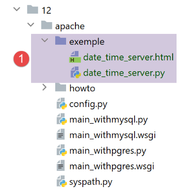
Le serveur [date_time_server.py] est le suivant :
L’application Flask est référencée par l’identifiant [application] (lignes 14, 43, 44). Ce nom est obligatoire. Si on référence l’application Flask avec un autre identifiant l’application ne va pas marcher avec un message d’erreur indiquant qu’elle ne trouve pas l’URL demandée. Ce message d’erreur ne donne aucune indication sur la source de l’erreur. Il faut donc être vigilant sur ce point.
Le fichier HTML référencé ligne 34 est le suivant :
- [date-time-server] sera le serveur virtuel qui hébergera cette application. Il sera configuré par le fichier [<laragon>\etc\apache2\sites-enabled\date-time-server.conf] (on rappelle que ce nom est libre – Apache lit tous les fichiers présents dans [sites-enabled] pour découvrir les sites virtuels hébergés) ; Nous obtenons ce fichier tout d’abord par recopie du fichier [auto.projet-test.test.conf] puis nous le modifions.
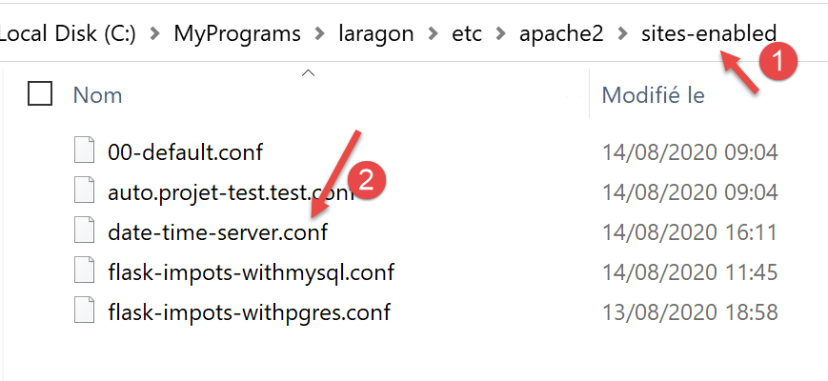
Le fichier [date-time-server.conf] sera le suivant :
- ligne 7 : on donne un nom au serveur virtuel configuré par le fichier ;
- ligne 2 : on donne la valeur de la variable [ROOT] utilisée aux lignes 14 et 27 ;
- lignes 14 et 27 : on indique le chemin du script Python qui doit être exécuté lorsque le serveur virtuel reçoit une requête. On indique ici que les requêtes pour le serveur [date-time-server] sont traitées par le script Python [date_time_server.py]. Cette différence avec le fichier [auto.projet-test.test.conf] vient du fait que ce fichier configurait un serveur PHP alors que le fichier [date-time-server.conf] configure un serveur Python ;
- lignes 14 et 27 : l’attribut [WSGIScriptAlias /] indique ici que la racine du serveur [date-time-server] sera [/]. Ainsi les URL de l’application auront la forme [http(s)://date-time-server/chemin] ;
- lignes 14 et 27, on peut donner une autre racine à l’application par exemple [WSGIScriptAlias /show]. Alors les URL de l’application auront la forme [http(s)://show/date-time-server/chemin] ; Il nous faut également ajouter une ligne au fichier [<windows>/system32/drivers/etc/hosts] :
On ajoute la ligne 25, pour donner l’adresse IP [127.0.0.1] au serveur virtuel [date-time-server].
Vérifions tout cela. Nous lançons le serveur Apache :
Nous demandons ensuite l’URL [https://date-time-server] avec un navigateur :
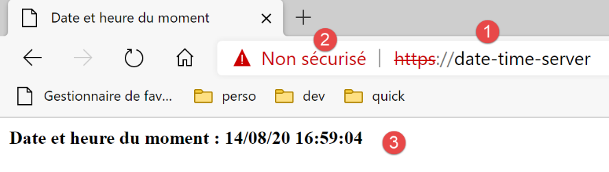
- en [1], l’URL demandée ;
- en [3], la réponse du serveur ;
- en [2], le navigateur indique que la connection HTTPS n’est pas sûre car il a détecté que le certificat envoyé par le serveur Apache était auto-signé ; Maintenant dans le fichier [date-time-server.conf], mettons un alias aux lignes 14 et 27 :
La modification n’est pas prise en compte immédiatement par le serveur Apache. Il faut le recharger :
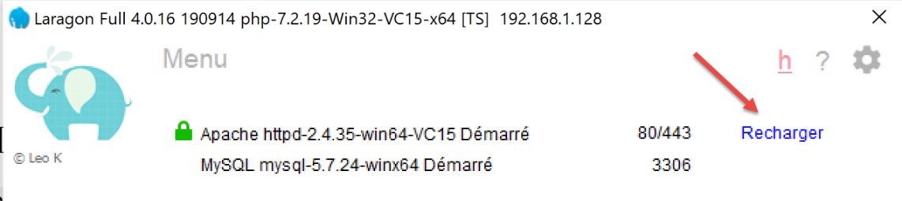
On demande ensuite l’URL [https://date-time-server/show-date-time]. La réponse du serveur est alors la suivante :
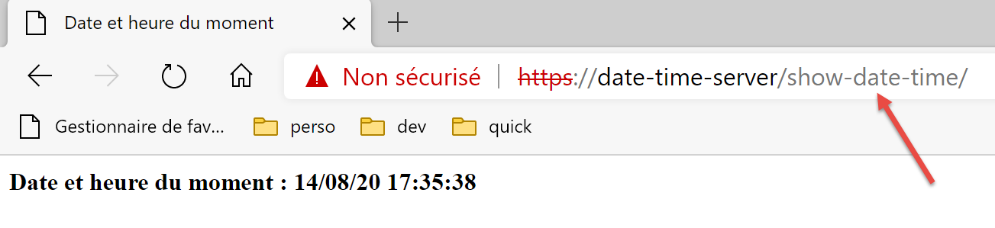
37.5. Portage de l’application de calcul de l’impôt sur Apache / Windows
Le dossier [apache] [2] est obtenu initialement par recopie du dossier [main]. Il est important qu’ils soient au même niveau pour que les chemins du script [syspath.py] copié de [1] vers [2] restent valides. Pour ne pas polluer l’application [impots / http-servers/ 12] qui fonctionne, nous mettons dans [apache] la configuration qui sera exécutée par le serveur Apache ;

- le fichier [config] de [2] est le même que [config] de [1] ;
- le fichier [syspath] de [2] est le même que [syspath] de [1] ;
- le fichier [main_withmysql] de [2] est le fichier [main] de [1] avec les modifications suivantes : Le script principal [main] recevait un paramètre [mysql / pgres] qui lui disait quel SGBD utilisé. Le script [main_withmysql] utilise le SGBD MySQL :
Ligne 7, on fixe le SGBD à MySQL.
- le fichier [main_withpgres] de [2] est le fichier [main] de [1] avec les modifications suivantes : il utilise le SGBD PostgreSQL :
Ligne 7, on fixe le SGBD à PostgreSQL.
Ceci fait, on crée le script [main_withmysql.wsgi] (le suffixe utilisé n’a pas d’importance) suivant :
Le script [main_withmysql.wsgi] sera la cible exécutée par le serveur Apache en mode WSGI :
- la cible du serveur Apache aurait pu être le script [main_withmysql.py] comme il a été fait précédemment avec le script [date_time_server.py]. Mais il aurait fallu le modifier un peu :
- contrairement au mode d’exécution avec un script console, avec Apache, le dossier contenant la cible [main_withmysql.py] ne fait pas partie du Python Path. Aussi, la ligne 6 du script [main_withmysql.py] provoque-t-elle une erreur ;
- la seconde modification qu’il aurait fallu faire est que dans [main_withmysql] l’application Flask est référencée par l’identifiant [app]. On sait que pour Apache / WSGI elle doit être également référencée par un identifiant [application] ;
- plutôt que de modifier [main_withmysql.py], on change la cible d’Apache. Ce sera désormais le script [main_withmysql.wsgi] ci-dessus :
- lignes 1-7 : on met le dossier du script dans le Python Path. Du coup, la ligne 6 de [main_withmysql.py] ne provoque plus d’erreur ;
- lignes 9-10 : l’importation de [main_withmysql.py] provoque son exécution. Par ailleurs on référence l’application Flask [app] trouvée dans [main_withmysql.py] avec l’identificateur [application] dont a besoin Apache en mode WSGI ; On fait de même avec le script [main_withpgres.wsgi] :
Nous avons désormais les cibles exécutables pour le serveur Apache. Il nous faut maintenant créer deux serveurs virtuels, un pour chaque cible.
Dans [<laragon>\etc\apache2\sites-enabled], nous créons le fichier [flask-impots-withmysql.conf] (le nom donné n’a pas d’importance) :
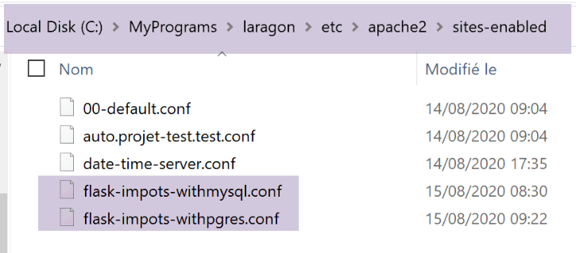
- ligne 2 : la racine de l’application, le dossier [apache] que nous avons créé ;
- lignes 23, 38 : la cible [main_witmysql.wsgi] que nous avons créée :
- ligne 7 : le serveur virtuel s’appellera [flask-impots-withmysql] ;
- ligne 13 : la directive [WSGIPythonPath] permet d’ajouter des dossiers au Python Path. Ici, Apache n’a pas connaissance que nous avons utilisé un environnement virtuel pour développer l’application et que tous les modules utilisés par l’application sont dans cet environnement virtuel. Aussi, ligne 13, nous ajoutons le dossier qui contient tous les modules de l’environnement virtuel utilisé. Une possibilité est de copier ce dossier à un autre endroit du système de fichiers et de référencer cet endroit. Une autre possibilité est d’ajouter ce dossier dans le Python Path directement dans la cible [main_witmysql.wsgi] (c’est probablement une meilleure solution) ;
- ligne 16 : on peut indiquer à Apache le dossier d’installation de Python dans le système de fichiers. Normalement, celui-ci est dans le PATH de la machine et souvent cette ligne est inutile (c’était le cas ici). Il peut cependant y avoir plusieurs installations de Python sur la machine et celle désirée n’est pas dans le PATH de la machine. Alors cette ligne résoud le problème ; On crée de la même façon un fichier [flask-impots-withpgres.conf] :
Nous sauvegardons tous ces fichiers, lançons le serveur Apache et les SGBD MySQL et PostgreSQL. L’application est configurée avec le préfixe d’URL [/do] et [with_csrftoken=False] (pas de jeton CSRF) dans [configs/parameters.py]. Nous demandons l’URL [https://flask-impots-withmysql/do]. La réponse du serveur est la suivante :
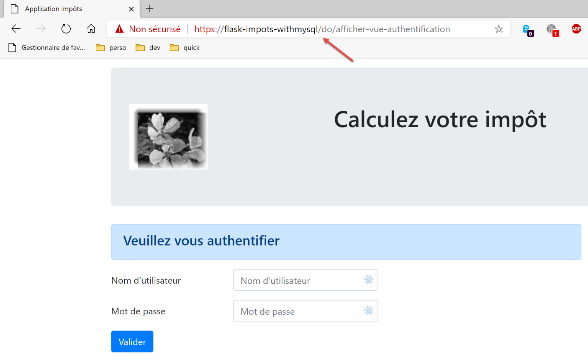
Nous demandons maintenant l’URL [https://flask-impots-pgres/do]. La réponse est la suivante :
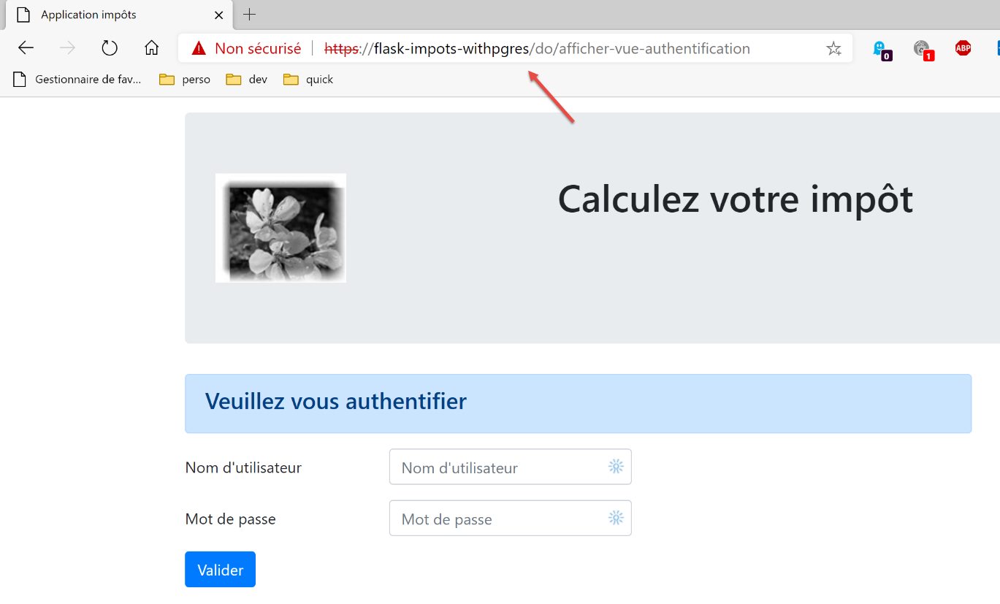
Les deux applications fonctionnent normalement.
Maintenant modifions le paramètre [WSGIScriptAlias] dans [flask-impots-withmysql.conf] :
- lignes 11 et 20, l’alias WSI est désormais [/impots] ; Nous arrêtons / relançons le serveur Apache puis nous demandons l’URL [https://flask-impots-withmysql/impots/do]. La réponse du serveur est la suivante :
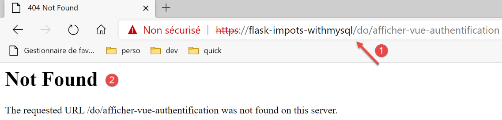
Il y a un plantage. L’URL [1] nous en donne la cause. Elle aurait du être [https://flask-impots-withmysql/impots/do/afficher-vue-authentification]. L’alias WSGI manque. C’est une erreur de notre application. Elle sait gérer un préfixe d’URL (/do est bien présent). On pourrait penser qu’en mettant le préfixe [/impots/do] à notre application cela résoudrait le problème précédent. Mais non. On rencontre alors d’autres types de problèmes. L’alias WSGI ne se comporte pas comme un préfixe d’URL.
Essayons de comprendre ce qui s’est passé. Nous avons demandé l’URL [https://flask-impots-withmysql/impots/do]. Nous nous attendions à avoir la vue d’authentification. En [1], ci-dessus on voit que l’application a demandé son affichage mais pas avec la bonne URL. Examinons le cheminement de la requête [https://flask-impots-withmysql/impots/do].
Tout d’abord la route suivante (configs/routes.py) a été exécutée :
La route de la ligne 3 est dans notre exemple [https://flask-impots-withmysql/impots/do]. On voit que la route a été débarrassée de la partie [https://flask-impots-withmysql/impots] pour devenir simplement [/do]. Pour la partie [https://flask-impots-withmysql] c’est normal, le nom du serveur n’est pas repris dans la route. Mais on voit qu’il ne reprend pas non plus l’alias WSGI [/impots]. C’est un point important. Même avec un alais WSGI nos routes initiales restent valides.
Maintenant voyons ce que fait la fonction [index] de la ligne 4 (configs/routes_without_csrftoken) :
Ligne 4, on est redirigé vers l’URL de la fonction [init_session]. Dans [configs/routes.py], cette fonction a été associée à la route [/do/init-session/html] :
Ligne 2, dans notre test [csrftoken_param] est la chaîne vide. L’application ne gère pas ici de jeton CSRF.
La fonction [init_session] est définie de la façon suivante (configs/routes_without_csrftoken) :
Ligne 4, on commence la chaîne de traitement de l’action [init-session]. Cette chaîne se termine de la façon suivante dans [responses/HtmlResponse] :
L’action [init-session] est une action ADS (Action Do Something) qui se termine pas une redirection vers une vue, ligne 9. C’est là que réside le problème. La fonction [redirect] de la ligne 9, n’ajoute pas automatiquement l’alias WSGI à l’URL de redirection. C’est ce que nous montre la copie d’écran ci-dessus. Il manque l’alias /impots dans l’URL objet de la redirection.
La version suivante apporte une solution au problème d’alias WSGI.